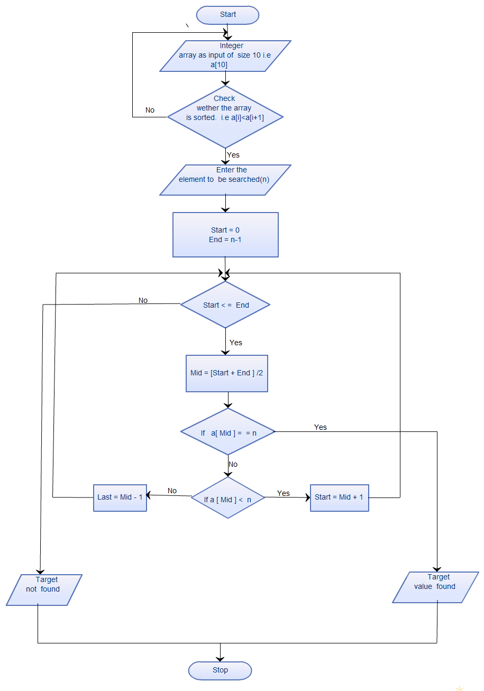

Introduction to Algorithms
An algorithm is defined as a way of instructing the computer to perform a certain operation. It is basically a series of step-by-step instructions required to solve any problems
It consist of a set of explicit and finite steps which, when carried out for a given set of initial conditions, produce the corresponding output and terminate in a fixed amount of time. It is a sequence of finite instructions often used for calculations and data processing.

Characteristics of Algorithms
- Finiteness - The algorithm should have a stop after a certain number of instructions. It should terminate after a fixed number of steps.
- Input - A good algorithm should be able to accept a set of defined input before the execution of the algorithm begins.
- Output - The algorithm should be able to produce results as output, preferably solution
- Definiteness - Each step of the algorithm is precise i.e., the action carried out should be specified clearly and unambiguous.
- Effectiveness - All the operations used in the algorithm are basic and can be performed exactly in a fixed duration of time.

Types of Algorithms
- Brute Force Algorithm - This is the most basic and simplest type of algorithm. A Brute Force Algorithm is the straightforward approach to a problem i.e., the first approach that comes to our mind on seeing the problem. More technically it is just like iterating every possibility available to solve that problem.
- Recursive Algorithm - This type of algorithm is based on recursion. In recursion, a problem is solved by breaking it into subproblems of the same type and calling own self again and again until the problem is solved with the help of a base condition.
- Divide and Conquer Algorithm - In Divide and Conquer algorithms, the idea is to solve the problem in two sections, the first section divides the problem into subproblems of the same type. The second section is to solve the smaller problem independently and then add the combined result to produce the final answer to the problem.
- Dynamic Programming Algorithms - This type of algorithm is also known as the memoization technique because in this the idea is to store the previously calculated result to avoid calculating it again and again. In Dynamic Programming, divide the complex problem into smaller overlapping subproblems and storing the result for future use.
- Greedy Algorithm - In the Greedy Algorithm, the solution is built part by part. The decision to choose the next part is done on the basis that it gives the immediate benefit. It never considers the choices that had taken previously.
- Backtracking Algorithm - In Backtracking Algorithm, the problem is solved in an incremental way i.e. it is an algorithmic-technique for solving problems recursively by trying to build a solution incrementally, one piece at a time, removing those solutions that fail to satisfy the constraints of the problem at any point of time.
Let's take an example!
It is always consider as one of the best ways to give an example while proposing any concept. Therefore, to get into the detail of how an algorithm works and its representation, we will take an example of Binary Search.
Binary Search
It is a search algorithm which falls under the category of divide and conquer algorithms. For using this algorithm, the input needs to in a sorted manner in accordance with any of parameter present in the input.
Explanation - In this algorithm, an element is searched in a sorted array by repeatedly dividing the search interval in half. Begin with an interval covering the whole array. If the value of the search key is less than the item in the middle of the interval, narrow the interval to the lower half. Otherwise, narrow it to the upper half. Repeatedly check until the value is found or the interval is empty.
Algorithms are generally represented in the form of flow charts. Following is the flowchart for binary search.
